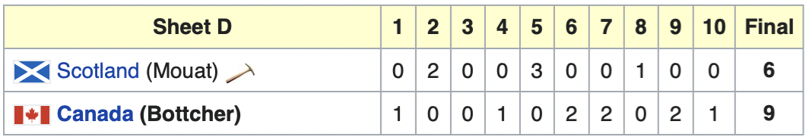
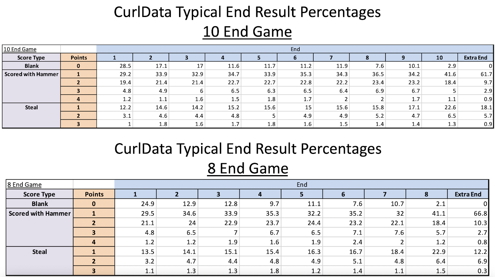
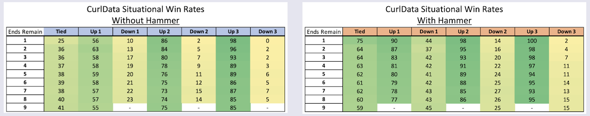
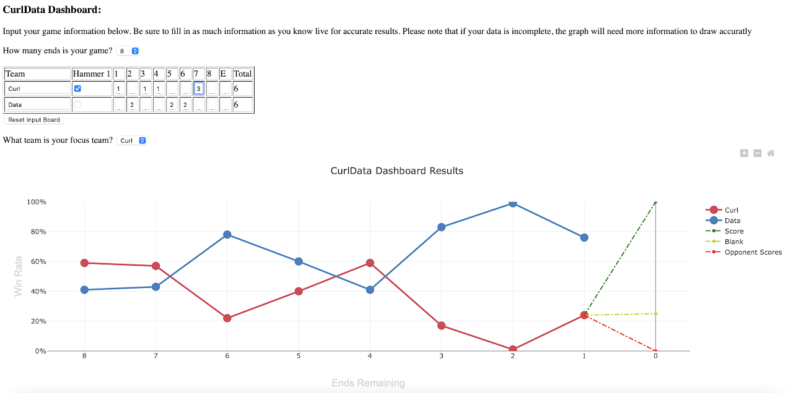

Welcome to CurlData
Welcome! You've arrived at CurlData and are probably wondering about our mission. Episode 1 will provide a brief overview of who we are, aiming to kickstart your journey into the world of curling analytics.
CurlData came to life in 2021 through a collaboration with Missing Link Technologies in Moncton, New Brunswick. In the realm of sports analytics, curling had been somewhat overlooked compared to other major sports. Given its rapid global growth in recent years, curlers across all skill levels were seeking ways to enhance their game. Initially conceived as a project to explore the possibilities of analytics in curling, we soon recognized the genuine potential to share our findings with the curling community.
As the project evolved, it became evident that there was a considerable void in resources for curlers looking to access clear analytics and integrate the results into their gameplay. This is the story of how we addressed this gap, the insights we uncovered, and our roadmap for the future.
Background and Initial Process
Curling, an age-old game originating in Scotland, involves two teams taking turns sliding rocks over ice towards a target. Over its history, it has evolved into a modern, sophisticated sport that demands both strategic and physical skills to outperform opponents. Played in "ends," similar to hockey's periods, teams accumulate points, and a winner is declared at the conclusion. Utilizing tools like the scoreboard and the "hammer" — the last shot advantage in an end — teams strategically aim to score points.
Curling athletes, affectionately known as "curlers," have always keenly observed strategic trends in the game. When we embarked on this project, we took these trends into account, considering some of curling's most pressing questions to develop key analytical inquiries.
- What is a team’s ideal outcome and situation for each end?
- Can we map out what typically happens in a curling game to understand what factors contribute to a team’s victory?
- What is the advantage of the hammer, and to what extent is curling just a battle for the hammer?
Armed with these questions, it became apparent that we needed a substantial amount of structured curling scoreboard data for statistical calculations and analysis. Unfortunately, no ready-to-use online curling database was available, prompting us to embark on the task of scraping this data ourselves. We developed a series of Python scripts, evolving them into a comprehensive data pipeline, capable of handling online data scraping, validation, and modifications.
The program operated by receiving a list of websites suspected to contain curling data. It systematically searched each link for tables resembling a curling scoreboard. For every identified scoreboard table, the program determined its relevance, and if suitable, scraped the data, adding it to our database. This meticulous process allowed us to efficiently gather data from tens of thousands of curling games available on the internet, creating a robust foundation for our subsequent analyses.

Statistics
With our extensive database at our disposal, we delved into the analysis. Our initial focus was understanding the dynamics of a curling game. Common wisdom suggested that having the hammer increased the likelihood of scoring two points, while scoring two without the hammer posed a significant challenge. To explore this, we set out to calculate the percentage breakdown of how often specific situations occurred in a game.
Using Python scripts, we fetched data from the database, filtered it to match predefined situations, and then determined the frequency of each event. Rigorous statistical measures, including confidence intervals and margins of error, were applied to ensure the accuracy of our findings. The outcome of this research yielded CurlData’s "Typical End Result Percentages," offering insights into the frequency of blanks, single points, and 2-point scores with the hammer — providing a comprehensive picture of scoring patterns in curling games.

Moving forward, our focus shifted to understanding how teams secure victories in a game. Curling is structured in "ends," each presenting an opportunity for teams to score points. Teams face decision points before each end, determining strategic goals such as "We aim for a two-point score" or "We aim to limit the opponent to one point." We envisioned providing curlers with real-time odds at these decision points, illustrating how subsequent actions could influence their chances of winning.
To compute these statistics, we designed a program to explore all possible scenarios within a curling game based on the remaining ends and calculate how often teams won games in each situation. The y-axis represented the remaining ends, while the x-axis covered score differentials and hammer possession. For instance, with four ends remaining, if a team possessed the hammer and led by one point, their chance of winning was determined to be 81%. Rigorous confidence statistics were again applied to ensure the precision of our results, and these statistics evolved into CurlData’s "Situational Win Rates."

Dashboard
With our initial research complete, we had not only calculated key stats but also unearthed a wealth of insights, though we're just scratching the surface in this article. The time had come to present our findings. Originally, we envisioned creating simple graphs highlighting intriguing situations. However, recognizing the serious demand for analytics in the curling world, we pondered the idea of developing something interactive — a tool to empower curlers to work with and learn analytics for game improvement. And that's precisely what we crafted.
We designed a custom dashboard that accepts user inputs in a table format mirroring a real curling scoreboard. The concept was simple: as a game unfolds, users input scores into our scoreboard to receive instant analytics. The system generates a live graph, depicting the current and historical win rates throughout the game. Simultaneously, as users input their data, dotted lines emerge, offering future predictions. For instance, the current win rate might be 55%, but if the team scores 2 points in the upcoming end, it could rise to 77%, or if the opponent scores, it might drop to 30%. This feature became a cornerstone in training curlers to understand how win rates evolve based on end outcomes.

With the CurlData Dashboard, curlers now possess a reference tool, informed by tens of thousands of curling game results, that illustrates their odds of winning the game over time. It suggests goals for the current end and reveals how their win rate could fluctuate in response to different scenarios. While curlers may already have strategies in mind, these statistical insights can either affirm or challenge existing approaches, sparking the possibility of new strategies. You can explore the dashboard yourself by visiting the CurlData Dashboard on our website.
Conclusion and Future
As we've only scratched the surface of CurlData in this blog post, if you're eager to delve deeper into our methodologies, check out our recent feature on The Data Crunch podcast. There, you can engage in an intriguing conversation about sports analytics and the CurlData project. Additionally, engage with us on our social media or at info@curldata.ca with any questions; we love discussing this stuff.
The most exciting aspect of this project is that CurlData doesn't stop here. We are thrilled to continue our exploration into curling analytics. Our commitment includes maintaining our extensive database, ongoing research into key areas of the sport, and regular blog updates. In these articles, we'll select topics of analytical interest, delve into the data behind them, and share our findings. We anticipate contributing to the prominence of analytics in curling and providing valuable resources for curlers to enhance their game.
Thank you for being a part of CurlData. We are genuinely excited about what the future holds and look forward to the analytics journey ahead!